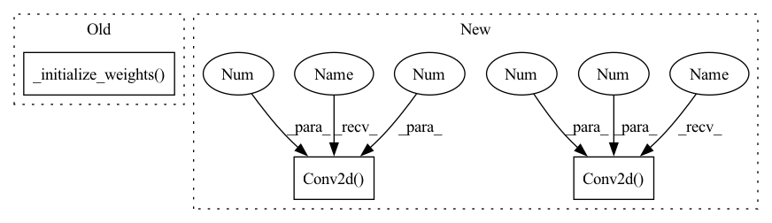

Pattern ID :20876

Before Change
)
self.conv_sep = ConvBlock(128 * scale, 512, kernel=(1, 1), stride=(1, 1), padding=(0, 0))
self.features = GDC(embedding_size)
self._initialize_weights()
def _initialize_weights(self):
for m in self.modules():
After Change
self.conv_45 = Residual_Block(128, 128, kernel=(3, 3), stride=(2, 2), padding=(1, 1), groups=512)
self.conv_5 = Residual(128, num_block=2, groups=256, kernel=(3, 3), stride=(1, 1), padding=(1, 1))
self.sep = nn.Conv2d(128, 512, kernel_size=1, bias=False)
self.sep_bn = nn.BatchNorm2d(512)
self.prelu = nn.PReLU(512)
self.GDC_dw = nn.Conv2d(512, 512, kernel_size=7, bias=False, groups=512)
self.GDC_bn = nn.BatchNorm2d(512)
self.features = nn.Conv2d(512, embedding_size, kernel_size=1, bias=False)
In pattern: SUPERPATTERN
Frequency: 3
Non-data size: 3
Instances
Fragment ID: 67241218
Project Name: bubbliiiing/arcface-pytorch
Commit Name: 8a0975f6a466c9b581a2518791353adaab04cbd2
Time: 2022-02-16
Author: 47347516+bubbliiiing@users.noreply.github.com
File Name: nets/mobilefacenet.py
M Class Name: MobileFaceNet
N Class Name: MobileFaceNet
M Method Name: __init__(2)
N Method Name: __init__(2)
M Parent Class: Module
N Parent Class: Module
M File Name: nets/mobilefacenet.py
N File Name: nets/mobilefacenet.py
M Start Line: 86
M End Line: 99
N Start Line: 63
N End Line: 88
'>
Before Change
)
self.conv_sep = ConvBlock(128 * scale, 512, kernel=(1, 1), stride=(1, 1), padding=(0, 0))
self.features = GDC(embedding_size)
self._initialize_weights()
def _initialize_weights(self):
for m in self.modules():
After Change
self.conv_45 = Residual_Block(128, 128, kernel=(3, 3), stride=(2, 2), padding=(1, 1), groups=512)
self.conv_5 = Residual(128, num_block=2, groups=256, kernel=(3, 3), stride=(1, 1), padding=(1, 1))
self.sep = nn.Conv2d(128, 512, kernel_size=1, bias=False)
self.sep_bn = nn.BatchNorm2d(512)
self.prelu = nn.PReLU(512)
self.GDC_dw = nn.Conv2d(512, 512, kernel_size=7, bias=False, groups=512)
self.GDC_bn = nn.BatchNorm2d(512)
self.features = nn.Conv2d(512, embedding_size, kernel_size=1, bias=False)
'>
Fragment ID: 67241219
Project Name: bubbliiiing/arcface-pytorch
Commit Name: 8a0975f6a466c9b581a2518791353adaab04cbd2
Time: 2022-02-16
Author: 47347516+bubbliiiing@users.noreply.github.com
File Name: nets/mobilefacenet.py
M Class Name: MobileFaceNet
N Class Name: MobileFaceNet
M Method Name: __init__(2)
N Method Name: __init__(2)
M Parent Class: Module
N Parent Class: Module
M File Name: nets/mobilefacenet.py
N File Name: nets/mobilefacenet.py
M Start Line: 86
M End Line: 99
N Start Line: 63
N End Line: 88
'>
Before Change
self.conv_block3 = nn.Conv2d(64, 3, (9, 9), (1, 1), (4, 4))
// Initialize neural network weights
self._initialize_weights()
def forward(self, x: torch.Tensor) -> torch.Tensor:
return self._forward_impl(x)
After Change
// Reconnect a layer of convolution block after upsampling.
self.conv3 = nn.Sequential(
nn.Conv2d(64, 64, (3, 3), (1, 1), (1, 1)),
nn.LeakyReLU(0.2, True)
)
// Output layer.
self.conv4 = nn.Conv2d(64, 3, (3, 3), (1, 1), (1, 1))
// The model should be defined in the Torch.script method.
def _forward_impl(self, x: torch.Tensor) -> torch.Tensor:
out1 = self.conv1(x)
'>
Fragment ID: 67241216
Project Name: lornatang/esrgan-pytorch
Commit Name: 46b948d8f86c7b83fe328e4572704b1755f98e68
Time: 2022-04-18
Author: liuchangyu1111@gmail.com
File Name: model.py
M Class Name: Generator
N Class Name: Generator
M Method Name: __init__(1)
N Method Name: __init__(1)
M Parent Class: nn.Module
N Parent Class: nn.Module
M File Name: model.py
N File Name: model.py
M Start Line: 120
M End Line: 147
N Start Line: 147
N End Line: 171
'>
Before Change
)
if init_weights:
self._initialize_weights()
def _initialize_weights(self):
for m in self.modules():
classname = m.__class__.__name__
After Change
nn.LeakyReLU(negative_slope=0.2, inplace=True),
nn.AdaptiveAvgPool2d(1),
nn.Conv2d(512, 1024, kernel_size=1),
nn.LeakyReLU(0.2),
nn.Conv2d(1024, 1, kernel_size=1)
)
def forward(self, input: Tensor) -> Tensor:
out = self.main(input)
'>
Fragment ID: 67241242
Project Name: lornatang/srgan-pytorch
Commit Name: 04f1fd5e1c6055eb258774b0fa9b35b704d692e7
Time: 2020-10-20
Author: liuchangyu1111@gmail.com
File Name: srgan_pytorch/model.py
M Class Name: Discriminator
N Class Name: Discriminator
M Method Name: __init__(1)
N Method Name: __init__(2)
M Parent Class: nn.Module
N Parent Class: nn.Module
M File Name: srgan_pytorch/model.py
N File Name: srgan_pytorch/model.py
M Start Line: 28
M End Line: 76
N Start Line: 28
N End Line: 65